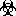

ReStructuredText Demo (import from demo.txt)
1 reStructuredText Demonstration
1.1 Examples of Syntax Constructs
- Author
-
David Goodger
- Address
-
123 Example Street Example, EX Canada A1B 2C3
- Contact
- Authors
-
Me; Myself; I
- organization
-
humankind
- date
-
$Date: 2012-01-03 19:23:53 +0000 (Tue, 03 Jan 2012) $
- status
-
This is a "work in progress"
- revision
-
$Revision: 7302 $
- version
-
1
- copyright
-
This document has been placed in the public domain. You may do with it as you wish. You may copy, modify, redistribute, reattribute, sell, buy, rent, lease, destroy, or improve it, quote it at length, excerpt, incorporate, collate, fold, staple, or mutilate it, or do anything else to it that your or anyone else's heart desires.
- field name
-
This is a generic bibliographic field.
- field name 2
-
Generic bibliographic fields may contain multiple body elements.
Like this.
- Dedication
-
For Docutils users & co-developers.
- abstract
-
This document is a demonstration of the reStructuredText markup language, containing examples of all basic reStructuredText constructs and many advanced constructs.
Table of Contents
1.1.1 Structural Elements
1.1.1.1 Section Title
That's it, the text just above this line.
1.1.2 Body Elements
1.1.2.1 Paragraphs
A paragraph.
1.1.2.1.1 Inline Markup
Paragraphs contain text and may contain inline markup: emphasis,
strong emphasis, inline literals, standalone hyperlinks
(http://www.python.org), external hyperlinks (Python 5), internal
cross-references (example), external hyperlinks with embedded URIs
(Python web site), footnote references
(manually numbered 1, anonymous auto-numbered 3, labeled
auto-numbered 2, or symbolic *), citation references
([CIT2002]), substitution references (), and inline
hyperlink targets (see Targets below for a reference back to here).
Character-level inline markup is also possible (although exceedingly
ugly!) in reStructuredText. Problems are indicated by
|problematic| text (generated by processing errors; this one is
intentional).
The default role for interpreted text is Title Reference. Here are
some explicit interpreted text roles: a PEP reference (PEP 287); an
RFC reference (RFC 2822); a subscript; a superscript;
and explicit roles for standard inline
markup.
Let's test wrapping and whitespace significance in inline literals:
This is an example of --inline-literal --text, --including some--
strangely--hyphenated-words. Adjust-the-width-of-your-browser-window
to see how the text is wrapped. -- ---- -------- Now note the
spacing between the words of this sentence (words
should be grouped in pairs).
If the --pep-references option was supplied, there should be a
live link to PEP 258 here.
1.1.2.2 Bullet Lists
-
A bullet list
Nested bullet list.
Nested item 2.
-
Item 2.
Paragraph 2 of item 2.
Nested bullet list.
-
Nested item 2.
Third level.
Item 2.
Nested item 3.
1.1.2.3 Enumerated Lists
-
Arabic numerals.
-
lower alpha)
-
(lower roman)
-
upper alpha.
upper roman)
-
-
-
-
Lists that don't start at 1:
Three
Four
C
D
iii
iv
List items may also be auto-enumerated.
1.1.2.4 Definition Lists
- Term
-
Definition
- Termclassifier
-
Definition paragraph 1.
Definition paragraph 2.
- Term
-
Definition
1.1.2.5 Field Lists
- what
-
Field lists map field names to field bodies, like database records. They are often part of an extension syntax. They are an unambiguous variant of RFC 2822 fields.
- how arg1 arg2
-
The field marker is a colon, the field name, and a colon.
The field body may contain one or more body elements, indented relative to the field marker.
1.1.2.6 Option Lists
For listing command-line options:
- -a
-
command-line option "a"
- -b file
-
options can have arguments and long descriptions
- --long
-
options can be long also
- --input=file
-
long options can also have arguments
- --very-long-option
-
The description can also start on the next line.
The description may contain multiple body elements, regardless of where it starts.
- -x, -y, -z
-
Multiple options are an "option group".
- -v, --verbose
-
Commonly-seen: short & long options.
- -1 file, --one=file, --two file
-
Multiple options with arguments.
- /V
-
DOS/VMS-style options too
There must be at least two spaces between the option and the description.
1.1.2.7 Literal Blocks
Literal blocks are indicated with a double-colon ("::") at the end of
the preceding paragraph (over there -->). They can be indented:
if literal_block:
text = 'is left as-is'
spaces_and_linebreaks = 'are preserved'
markup_processing = None
Or they can be quoted without indentation:
>> Great idea! > > Why didn't I think of that?
1.1.2.8 Line Blocks
Take it away, Eric the Orchestra Leader!
A one, two, a one two three fourHalf a bee, philosophically,must, ipso facto, half not be.But half the bee has got to be,vis a vis its entity. D'you see?But can a bee be said to beor not to be an entire bee,when half the bee is not a bee,due to some ancient injury?Singing...
1.1.2.9 Block Quotes
Block quotes consist of indented body elements:
My theory by A. Elk. Brackets Miss, brackets. This theory goes as follows and begins now. All brontosauruses are thin at one end, much much thicker in the middle and then thin again at the far end. That is my theory, it is mine, and belongs to me and I own it, and what it is too.
—Anne Elk (Miss)
1.1.2.10 Doctest Blocks
>>> print 'Python-specific usage examples; begun with ">>>"' Python-specific usage examples; begun with ">>>" >>> print '(cut and pasted from interactive Python sessions)' (cut and pasted from interactive Python sessions)
1.1.2.11 Tables
Here's a grid table followed by a simple table:
Header row, column 1 (header rows optional) |
Header 2 |
Header 3 |
Header 4 |
|---|---|---|---|
body row 1, column 1 |
column 2 |
column 3 |
column 4 |
body row 2 |
Cells may span columns. |
||
body row 3 |
Cells may span rows. |
|
|
body row 4 |
|||
body row 5 |
Cells may also be
empty: |
||
Inputs |
Output |
|
|---|---|---|
A |
B |
A or B |
False |
False |
False |
True |
False |
True |
False |
True |
True |
True |
True |
True |
1.1.2.12 Footnotes
- 1(1,2)
-
A footnote contains body elements, consistently indented by at least 3 spaces.
This is the footnote's second paragraph.
- 2(1,2)
-
Footnotes may be numbered, either manually (as in 1) or automatically using a "#"-prefixed label. This footnote has a label so it can be referred to from multiple places, both as a footnote reference (2) and as a hyperlink reference (label).
- 3
-
This footnote is numbered automatically and anonymously using a label of "#" only.
- *
-
Footnotes may also use symbols, specified with a "*" label. Here's a reference to the next footnote: †.
- †
-
This footnote shows the next symbol in the sequence.
- 4
-
Here's an unreferenced footnote, with a reference to a nonexistent footnote: [5]_.
1.1.2.13 Citations
- CIT2002(1,2)
-
Citations are text-labeled footnotes. They may be rendered separately and differently from footnotes.
Here's a reference to the above, [CIT2002], and a [nonexistent]_ citation.
1.1.2.14 Targets
This paragraph is pointed to by the explicit "example" target. A reference can be found under Inline Markup, above. Inline hyperlink targets are also possible.
Section headers are implicit targets, referred to by name. See Targets, which is a subsection of Body Elements.
Explicit external targets are interpolated into references such as "Python 5".
Targets may be indirect and anonymous. Thus this phrase may also refer to the Targets section.
Here's a `hyperlink reference without a target`_, which generates an error.
1.1.2.14.1 Duplicate Target Names
Duplicate names in section headers or other implicit targets will generate "info" (level-1) system messages. Duplicate names in explicit targets will generate "warning" (level-2) system messages.
1.1.2.14.2 Duplicate Target Names
Since there are two "Duplicate Target Names" section headers, we cannot uniquely refer to either of them by name. If we try to (like this: `Duplicate Target Names`_), an error is generated.
1.1.2.15 Directives
These are just a sample of the many reStructuredText Directives. For others, please see http://docutils.sourceforge.net/docs/ref/rst/directives.html.
1.1.2.15.1 Document Parts
An example of the "contents" directive can be seen above this section (a local, untitled table of contents) and at the beginning of the document (a document-wide table of contents).
1.1.2.15.2 Images
An image directive (also clickable -- a hyperlink reference):
A figure directive:
A figure is an image with a caption and/or a legend:
re |
Revised, revisited, based on 're' module. |
Structured |
Structure-enhanced text, structuredtext. |
Text |
Well it is, isn't it? |
This paragraph is also part of the legend.
1.1.2.15.3 Admonitions
Attention!
Directives at large.
Caution!
Don't take any wooden nickels.
!DANGER!
Mad scientist at work!
Error
Does not compute.
Hint
It's bigger than a bread box.
Important
Wash behind your ears.
Clean up your room.
Call your mother.
Back up your data.
Note
This is a note.
Tip
15% if the service is good.
Warning
Strong prose may provoke extreme mental exertion. Reader discretion is strongly advised.
And, by the way...
You can make up your own admonition too.
1.1.2.15.6 Replacement Text
I recommend you try Python, the best language around 5.
1.1.2.15.7 Compound Paragraph
This paragraph contains a literal block:
Connecting... OK Transmitting data... OK Disconnecting... OK
and thus consists of a simple paragraph, a literal block, and another simple paragraph. Nonetheless it is semantically one paragraph.
This construct is called a compound paragraph and can be produced with the "compound" directive.
1.1.2.16 Substitution Definitions
An inline image () example:
(Substitution definitions are not visible in the HTML source.)
1.1.3 Extensions
Some extensions of docutils
1.1.3.2 Mathematics
For the discrete memoryless channel, Shannon's maximum channel capacity is:
where X and Y are random variable representing the input and output respectively. The optimization is taken all over the input probability distribution \(p = (p_1 \cdots p_n)\) with the constraints \(p_i \ge 0\)
and the mutual information is defined as:
The optimal \(p\) gives the distribution on the input symbol required to achieve the channel capacity.
1.1.4 Error Handling
Any errors caught during processing will generate system messages.
|*** Expect 6 errors (including this one). ***|
There should be six messages in the following, auto-generated section, "Docutils System Messages":